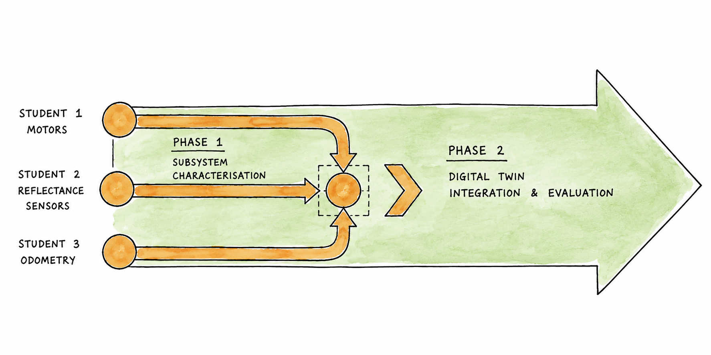
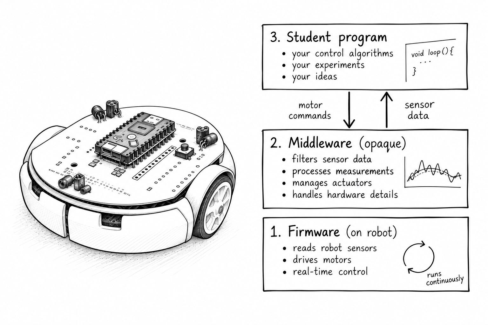

Introduction

The coursework has two concurrent phases. Each team member will develop their measure one real robot subsystem, collecting measurements and developing their technical understanding (Phase 1). The team then combines those specialist findings to improve and make a critical analysis of a simulation model of the same robot (Phase 2).
A simulation of a target robot, used for complementary analysis or development of a robot, is referred to as a Digital Twin. From the beginning of the course to the end, you'll be working in a shared context to report on the full Digital Twin system applied to a robotics task of your choosing.
Phase 1: Characterise a real robot subsystem
In Phase 1 of this course you will develop tests to measure the performance characteristics of the real robot. You will use a microcontroller on top of the robot called a StampC3 as the primary tool to take measurements. You will write code for the StampC3 to collect sensor information and send sequences of motor commands to the Pololu 3Pi+ robot.
The StampC3 and the Pololu 3Pi+ robot operate together as a pair. The relationship between the StampC3 and the Pololu 3Pi+ robot is similar to a rider and a horse:

- The horse (Pololu 3Pi+) provides movement and perception. The Pololu 3Pi+ robot is provided to you pre-programmed with code. The Pololu 3Pi+ automatically updates the sensors and motors. You will not write code for the Pololu 3Pi+ or program it directly. Instead, you will query the Pololu 3Pi+ and issue commands.
- The rider (StampC3) needs to be programmed by you to respond to the information from the Pololu 3Pi+, and to decides what to request or command next. You will program this controller.
Firmware, Middleware - and your Code
The Pololu 3Pi+ robot provided to you is pre-programmed with firmware and middleware. The firmware is responsible for the low-level instructions to operate the sensors and motors - it is continually performing this operation automatically. The middleware is responsible for providing you with unique and interesting characteristics to measure on your robot. The middleware therefore applies small but measurable modifications to the motor actuation and the surface reflectance sensor readings.

The firmware and middleware approach has been intentionally designed and used for several education reasons:
- The middleware presents important robotics related concepts and characteristics for you to measure, that would not necessarily be present on a low-cost and low-powered robot.
- The middleware presents an opaque system for the latest AI tools and systems. Because the middleware is configurable on a per-student basis, it means that an AI tool or system cannot know or predict how your robot will perform exactly. In this way, the middleware provides you with an interesting platform to investigate with AI assitance (if you choose to use AI assistance).
- The firmware and middleware presents an abstraction layer to you, meaning that you will learn to operate a robot through an Application Programming Interface (API). This is likely to be similar to what you will encounter when you begin a career in modern robotics. It will be a beneficial experience to learn to become familiar with large quantity of code that you have not written. You will learn which parts of a system must be kept intact, and which parts can be extended and developed further. You will become comfortable with reviewing large quantities of code, technical references.
Your learning outcomes in Phase 1 will be a greater technical understanding of how robotic subsystems function, how their performance can vary, and how we can approach characterising them. You will establish an understanding of designing tests relative to known or anticipated technical and functional expectations.
Phase 2: Update and evaluate the Digital Twin
In Phase 2 of this course, you will transfer your findings from Phase 1 into a simulation of the robot, referred to as a Digital Twin. Your objective is to make your simulator better match the reality of your robot—referred to as correspondence.
Making a perfect model is not possible. Instead, you will want to improve the aspects that matter most. To decide what matters, your team will select a task for the robot to complete both in reality and in simulation. You can then be selective about which Phase 1 measurements to model, and use the task to observe, measure, and evaluate the degree of correspondence.

Your learning outcome in Phase 2 is to construct an evidence-informed argument for which aspects of the robot's behaviour are most important to model in the Digital Twin, and to evaluate how and why discrepancies remain between reality and simulation. This will include a critical reflection on the experimental approach undertaken.
If you observe little or no discrepancy, this may indicate that the selected robot task was too simplistic, or that the experiment was controlled so tightly that it was no longer representative of real-world behaviour. It is important that you design a test capable of revealing a meaningful discrepancy, then report with evidence whether it does, to what extent, and the implications. In Phase 2 you will use experimental methodology to acquire new knowledge under uncertainty and complexity.
You will therefore demonstrate the critical thinking required to design experiments that are both scientifically rigorous and sufficiently representative of the behaviour you wish to understand.

Build an argument, not a perfect solution
Your aim is to critically examine the differences between the digital twin simulation and the physical robot, using these discrepancies to investigate the assumptions, limitations and behaviour differences. We are not aiming for a large volume of code or a solution to a specific problem. See yourself as a scientist: your task is to ask questions, take measurements, and present the evidence for your new understanding. You will communicate your new understanding by collecting measurements and using these to provide an evidence-supported argument.